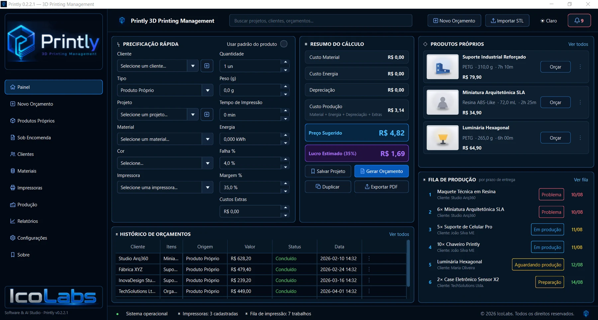
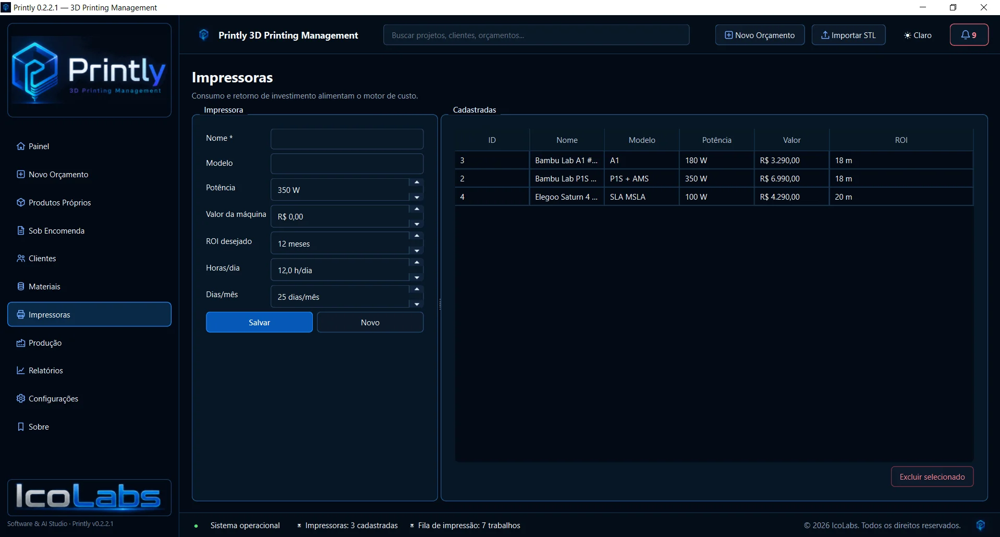
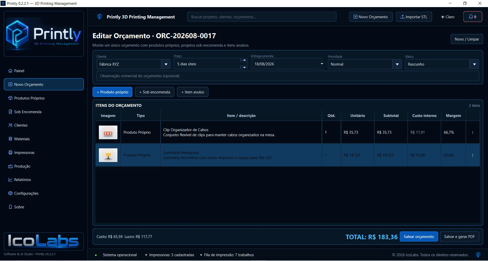
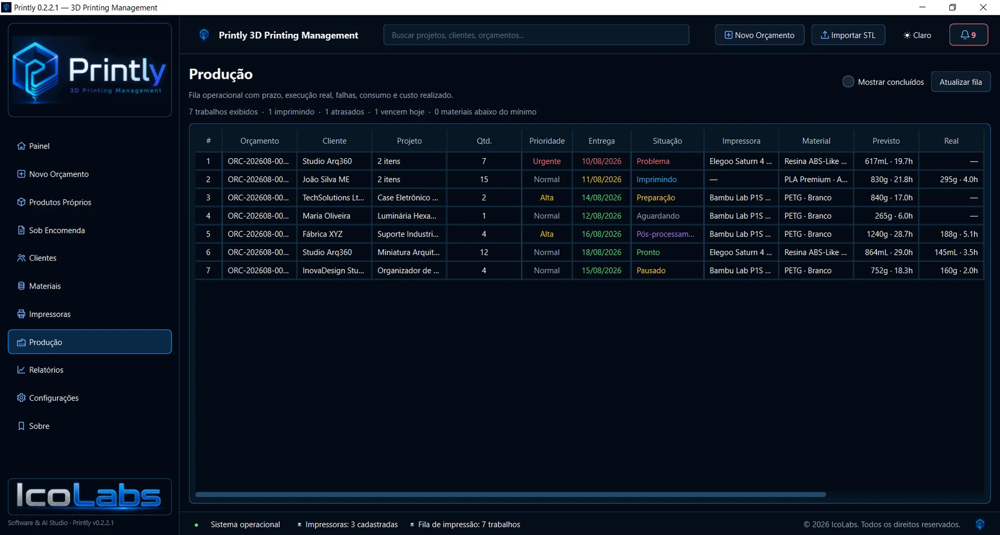
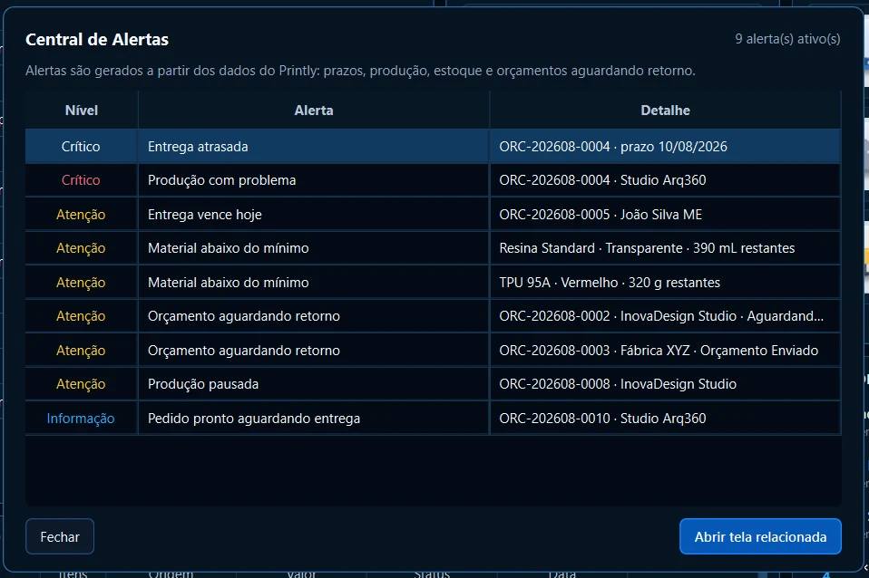
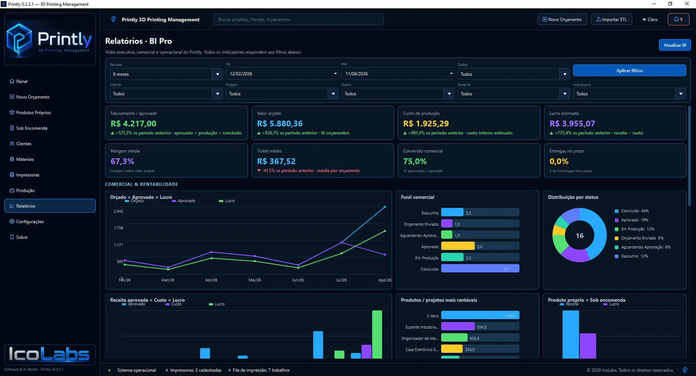

Quando material é o único custo lembrado, energia, depreciação, falhas, custos extras e margem acabam saindo do seu bolso.
GESTÃO PARA QUEM QUER LUCRAR COM IMPRESSÃO 3D
Sua impressora pode estar trabalhando enquanto sua margem desaparece.
O Printly foi criado para quem cansou de formar preço no improviso, procurar pedidos no WhatsApp, controlar produção na memória e descobrir tarde demais que uma peça deu mais custo do que retorno.
Calcule custos e perdas, planeje o ROI das impressoras, gere orçamentos profissionais em PDF e conecte clientes, materiais, estoque, produção, alertas e relatórios em uma única operação.
Interface disponível em Português, English e Español.
Custos mais clarosMaterial, energia, perdas e margem
Produção organizadaPrazo, prioridade e status
Visão do negócioROI, alertas, histórico e BI

Preço com contextocusto + perda + margem
Gestão financeiraROI + BI + rentabilidade
SE ALGUMA DESSAS FRASES É FAMILIAR, O PRINTLY FOI FEITO PARA VOCÊ
O problema raramente é imprimir. É controlar tudo o que acontece em volta da impressão.
Sem acompanhar valor da máquina, capacidade de uso e horizonte de retorno, investimento vira sensação em vez de decisão.
Orçamentos e históricos espalhados em conversas, notas e planilhas tornam cada novo atendimento mais lento.
Quando prazo, prioridade, máquina e status ficam na cabeça, a produção perde previsibilidade e o cliente sente primeiro.
Estoque baixo, atraso, produção com problema ou orçamento sem retorno precisam aparecer antes de virarem incêndio.
Volume de pedidos não é a mesma coisa que resultado. O Printly ajuda a enxergar custos, margem e indicadores da operação.
TRÊS MUDANÇAS NA ROTINA
Não venda no escuro. Não produza no caos. Não administre no achismo.
01
Não venda no escuro
Forme preço considerando o que realmente impacta a operação — inclusive perdas, custos indiretos e margem.
02
Não produza no caos
Transforme pedidos aprovados em uma fila operacional com prioridade, entrega, impressora, material e acompanhamento.
03
Não administre no achismo
Use ROI, histórico, alertas e BI para entender retorno, rentabilidade e gargalos antes de tomar a próxima decisão.
PRECIFICAÇÃO QUE ENXERGA ALÉM DO FILAMENTO
A peça que falha também custa dinheiro.
O Printly permite compor a precificação com variáveis que costumam ser esquecidas quando o preço é feito no improviso.
01
MaterialFilamentos e resinas cadastrados na operação.
02
EnergiaConsumo elétrico entra no custo.
03
DepreciaçãoO equipamento também participa do custo da peça.
04
Falhas e perdasInclua uma taxa de falha para não absorver o desperdício na margem.
05
Custos extrasAcabamento, administração e outros componentes podem fazer parte do cálculo.
06
Margem e preço sugeridoVeja custo de produção, preço sugerido e lucro estimado.
Custo real antes da vendaPrecificação rápida
RETORNO DO INVESTIMENTO
Você sabe quanto sua impressora produz. O Printly ajuda a planejar quando ela se paga.
Cadastre valor da máquina, potência, ROI desejado, horas de uso por dia e dias de operação por mês. O Printly traz o retorno para a mesma gestão onde estão seus custos e produção.
- Valor da impressora
- Potência elétrica
- ROI desejado em meses
- Horas por dia e dias por mês
- Visão do retorno por equipamento
“Comprar uma impressora é investimento. Saber quando ela se paga é gestão.”
ROI por equipamentoImpressoras

ORÇAMENTO PROFISSIONAL
“Fica R$ X” no WhatsApp não precisa ser o seu processo comercial.
Monte orçamentos com produtos próprios, projetos sob encomenda e itens avulsos. Acompanhe custo, margem, valor e status — e gere um PDF personalizável para apresentar ao cliente de forma profissional.
- Orçamentos com múltiplos itens
- Cliente, prazo, prioridade e status
- Custo interno, margem e total
- PDF personalizável
- Histórico para consulta e reemissão
Do cálculo à propostaOrçamentos

UMA OPERAÇÃO, NÃO UMA COLEÇÃO DE TELAS
O orçamento aprovado não termina o trabalho. Ele começa o fluxo.
O valor do Printly está em conectar as etapas que normalmente ficam separadas.
ClienteQuem pediu
→
OrçamentoO que foi vendido
→
Produto / ProjetoO que será produzido
→
ProduçãoPrazo, máquina e status
→
ConclusãoHistórico e resultado
PRODUÇÃO SEM MEMÓRIA DE CURTO PRAZO
Abra o Printly e saiba o que precisa da sua atenção.
A fila operacional reúne o que é importante para decidir o próximo passo sem depender de mensagens, papel ou memória.
PrioridadeUrgente, alta, normal
EntregaPrazo visível
SituaçãoAguardando, produzindo, problema...
Real x previstoConsumo e tempo
Fila operacionalProdução

ALERTAS QUE VIRAM AÇÃO
Não espere o cliente avisar que existe um problema.
A Central de Alertas reúne situações que exigem atenção para que atraso, falta de material ou problema na produção não fiquem escondidos na rotina.
- Entrega atrasada
- Produção com problema
- Entrega vencendo
- Material abaixo do mínimo
- Orçamento aguardando retorno
- Pedido pronto aguardando entrega
O que precisa ser visto agoraCentral de Alertas

VISÃO GERENCIAL
Vender mais é bom. Entender o resultado é melhor.
Relatórios e BI ajudam a olhar faturamento, valor orçado, custo de produção, lucro estimado, margem, conversão, ticket e status da operação com filtros e gráficos.
Em vez de administrar pela sensação de “parece que o mês foi bom”, você ganha uma visão consolidada do negócio.
Comercial + rentabilidadeRelatórios / BI

VEJA O PRINTLY EM AÇÃO
Uma interface criada para a rotina real da impressão 3D.
Explore telas do aplicativo e veja como as áreas da operação se conectam dentro do mesmo ambiente.
01
Painel para decidir sem trocar de contexto
Precificação rápida, resumo do cálculo, produtos, fila de produção e histórico reunidos na visão inicial.
E AINDA TEM MAIS
O Printly cobre o que acontece antes, durante e depois da impressão.
Produtos próprios
Monte um catálogo reutilizável para trabalhos recorrentes.
Sob encomenda
Separe projetos personalizados de produtos de catálogo.
FDM + SLA
Cadastre filamentos e resinas com custos e estoque próprios.
Importação STL
Leia dimensões, volume geométrico, formato e triângulos antes de transformar o arquivo em item comercial.
Backup e restauração
Proteja a base de dados da operação e restaure quando necessário.
Dados locais
O aplicativo roda no Windows e mantém o banco da operação no computador.
COMECE NO SEU RITMO
Baixe grátis agora. Evolua quando sua operação pedir.
A versão Free organiza o começo sem custo. Quando você precisar de mais cadastros, orçamentos, importação avançada e gestão completa, o Printly Completo acompanha o crescimento.
PRINTLY FREER$ 0para começar
- Precificação básica
- 1 impressora cadastrada
- Até 5 materiais e 5 produtos próprios
- Até 5 clientes e 3 projetos sob encomenda
- Produção, estoque e BI em modo básico
- Dados salvos localmente no Windows
MAIS RECURSOS
PRINTLY COMPLETOR$ 69,90pagamento único
- Cadastros ilimitados
- Orçamentos profissionais ilimitados
- STL e 3MF avançado
- Múltiplos materiais por peça
- Produção, estoque, relatórios e BI completos
- Backup, restauração e atualizações incluídas
PRINTLY SUPRIMENTOS
Abrir loja de suprimentos ↗
Materiais, peças e ferramentas para sua próxima impressão.
Explore nossa seleção de suprimentos e ofertas de lojas parceiras, organizada para quem trabalha com impressão 3D.
DESENVOLVIDO PELA ICOLABS
Tecnologia feita para resolver problemas reais de operação.
Printly é um produto IcoLabs. A identidade da marca aparece no aplicativo como assinatura de desenvolvimento — sem transformar o software em uma vitrine da desenvolvedora.
DÚVIDAS FREQUENTES
Antes de começar, o que vale saber.
Existe uma versão gratuita?
Sim. Você pode baixar o Printly Free para Windows e começar com os recursos essenciais. Quando precisar ampliar limites e recursos, pode migrar para o Printly Completo.
O Printly é uma planilha?
Não. É um aplicativo desktop para Windows, com interface própria e banco de dados local.
Funciona no macOS?
A versão atual está disponível para Windows. A edição para macOS está em desenvolvimento e será lançada em breve.
O Printly calcula perdas e falhas?
Sim. A taxa de falha pode entrar na formação de preço para que o custo do desperdício não seja simplesmente absorvido pela margem.
Consigo acompanhar ROI das impressoras?
Sim. O cadastro de impressoras trabalha com valor da máquina, ROI desejado, horas por dia e dias por mês, trazendo o retorno para dentro da gestão.
O orçamento sai em PDF?
Sim. O Printly gera PDF de orçamento e permite personalização do modelo comercial para apresentação ao cliente.
Trabalha com filamento e resina?
Sim. O cadastro de materiais contempla FDM e SLA.
Importa STL?
Sim. O Printly lê informações geométricas do STL e permite completar os dados comerciais antes de salvar ou adicionar ao orçamento.
Onde ficam os meus dados?
O banco fica localmente no computador. O aplicativo também possui recursos de backup e restauração.
Por que o site pede meus dados antes do download?
Usamos esses dados para liberar o download, entender o interesse na versão gratuita e enviar comunicações relacionadas ao Printly. Você pode solicitar correção ou exclusão a qualquer momento.
QUANDO SUA OPERAÇÃO PEDIR MAIS
Quanto vale tirar sua operação do improviso?
Um único orçamento mal calculado, uma falha ignorada ou um atraso que vira retrabalho pode custar mais do que a ferramenta que organiza tudo isso.
Precificação com custos, perdas e margem
ROI de impressoras
Orçamento em PDF personalizável
Clientes, produtos, materiais e produção
Alertas, histórico e BI

PRINTLY COMPLETO3D Printing Management
pagamento únicoR$69,90licença vitalícia
Sem mensalidade para continuar usando o software adquirido.
Quero adquirir o PrintlyFalar no WhatsApp Prefere e-mail? icolabsbr@gmail.com